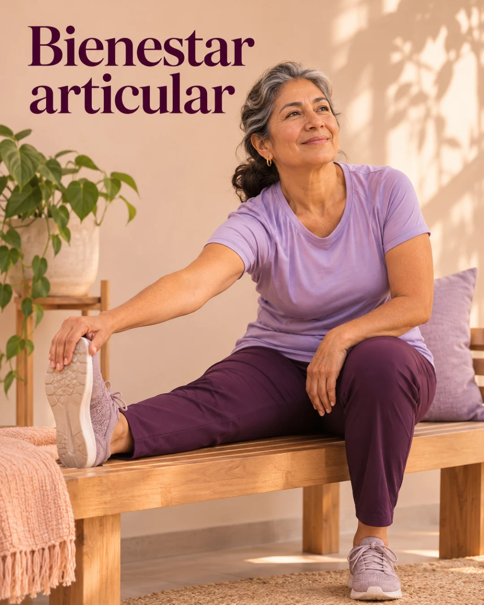

Activa JavaScript para responder el cuestionario y consultar el resumen.
Cuestionario de movilidad
Identifica cuándo te molesta más el dolor y cómo influye en tu descanso, tus movimientos y tu rutina.
Tus respuestas se usan para mostrarte un resumen en esta página.
